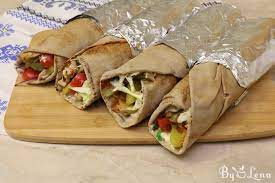

Shawarma

Description
Have a craving for some delicious chicken shawarmas? Here's a quick and easy marinade you can use on your chicken, then make your shawarmas with your favorite bread and filling ingredients!
Ingredients
- 1 pound boneless, skinless chicken breast halves, sliced into thin strips
- ½ cup Greek yogurt
- 1 tablespoon fresh or jarred minced garlic
- 1 tablespoon lemon juice
- ½ teaspoon ground cinnamon
- ½ teaspoon dried oregano
- ½ teaspoon salt
- ¼ teaspoon ground nutmeg
- ¼ teaspoon ground cloves
Preparation
- Combine chicken, Greek yogurt, garlic, lemon juice, cinnamon, oregano, salt, nutmeg, and cloves in a resealable plastic container or bag. Shake until ingredients are evenly combined and chicken is well coated. Refrigerate at least 4 hours, up to overnight.
- Discard excess marinade and cook the chicken as desired when ready to make sandwiches or wraps.